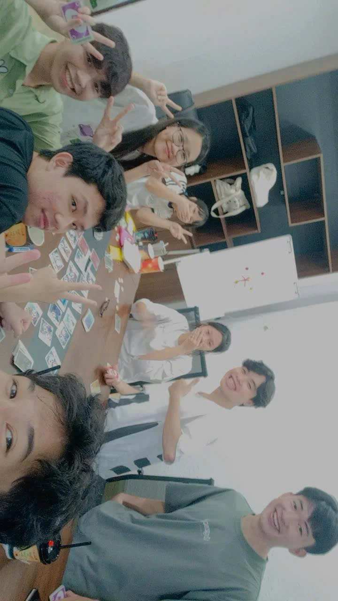

Tôi là Thiện Nhân, sinh ra và lớn lên tại TP.Hồ Chí Minh. Sau 9 năm sống tại TP.HCM, tôi chuyển về quê của tôi là Đức Hòa, Long An sinh sống và học tập. Đến cuối năm 2020, tôi bước vào cánh cửa đại học, tôi lại quay trở lại TP.HCM thuê trọ để học tâọ và làm việc tại đây. Sau 1 tháng tìm việc làm, tôi đã bắt đầu công việc đầu tiên của mình là nhân viên phục vụ Chicken Plus. Mỗi ngày lập đi lập lại đếm tháng 9/2020, tôi nhập học và bắt đầu chương mới của bản thân tại trường Đại học Văn Hiến TP.Hồ Chí Minh.
Môn đầu tiên tôi học ở Đại học là Triết học Mác-Lênin, tôi đã may mắn được gặp được những người bạn đầu tiên ở Đại học, chúng tôi lập nhóm và đặt tên nhóm là Bản Thiết Kế Vĩ Đại. Sau đó những môn khác chúng tôi cũng được sắp học chung với nhau. Kể từ đó chúng tôi đăng ký môn chung và học chung đến tận bây giờ.
